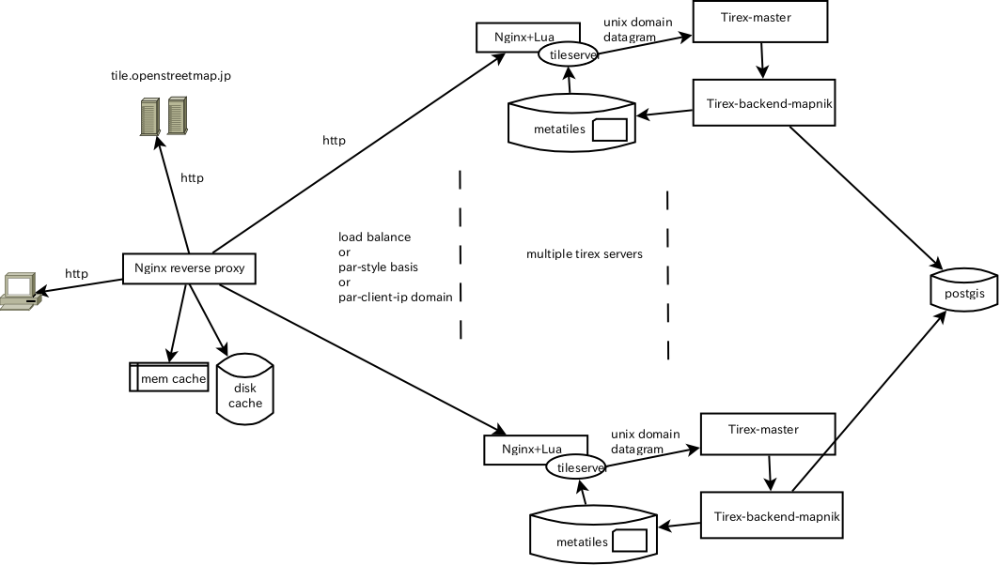

Hiroshi Miura @miurahr
nginx.org
High performance
Asynchronous architecture, event driven
Low memory foot print
Declarative configuration syntax
Extesible architecture with module
OpenResty.org
OpenResty: Nginx + module collection
Non-Blocking I/O with Nginx and modules
memcached
redis
PostgreSQL
MySQL
Lua embeded scripting engine as nginx module.
Collection of Lua resty libraries
In production on Alibaba group, world largest EC site.
server {
listen 80;
listen [::]:80 default_server;
root /usr/share/nginx/html;
index index.html index.htm;
server_name localhost;
location / {
# First attempt to serve request as file, then
# as directory, then fall back to displaying a 404.
try_files $uri $uri/ /index.html;
}
location /doc/ {
alias /usr/share/doc/;
autoindex on;
allow 127.0.0.1;
deny all;
}
Use memcached with nginx and module.
location /memcached {
set $memc_cmd $arg_cmd;
set $memc_key $arg_key;
set $memc_value $arg_val;
set $memc_exptime $arg_exptime;
memc_pass 127.0.0.1:11211;
}
lua.org
Scripting language born in Brazil in 1992
Combines simple procedural syntax with powerful data description
Dynamic variable type
Register-based virtual machine
Automatic memory management
Lua is a proven, robust language
Lua is fast
Lua is portable
Lua is embeddable
Lua is powerful
Lua is small
Lua is free
Lua loves Games
Provide directives to run Lua scripts during Nginx processes
Access Nginx environment from Lua scripts
Very fast as Nginx does
Faster with Lua JIT
github.com/chaoslawful/lua-nginx-module
location /hellolua {
default_type 'text/plain';
content_by_lua '
local name = ngx.var.arg_name or "Anonymous"
ngx.say("Hello, ", name, "!")
';
}
$ curl http://localhost/hellolua?name=Lua
Hello, Lua!
Modules are loaded once, on the first request
location /lua {
rewrite_by_lua_file /path/to/rewrite.lua;
access_by_lua_file /path/to/access.lua;
content_by_lua_file /path/to/content.lua;
}
Coroutine to integrate with nginx reactor
Synchronous interface to access non-blocking I/O API.
Send and recieve TCP/UDP on Inet/Unix domain socket.
Compatible with Lua socket API
Keepalive mechanism to pool connections
location /memcached {
content_by_lua '
local sock = ngx.socket.connect("127.0.0.1", 11211)
sock:send("SET foo bar 3600\r\n")
local line = sock:receive()
if line then
ngx.say(line)
end
sock:setkeepalive() ';
}
$ curl http://localhost/memcached
STORED
Per-request context data = Lua table to store data duraring request lifetime
location /ctx {
access_by_lua '
ngx.ctx.userid = 'abcde'
';
content_by_lua '
ngx.say(ngx.ctx.userid)
';
}
$ curl http://localhost/ctx
abcde
Global hash table across all requests
http {
lua_shared_dict stats 10m;
server {
location / {
content_by_lua '
ngx.shared.stats:incr("hits", 1)
ngx.say(ngx.shared.stats:get("hits"))
';
}
}
}
OpenResty bundles Lua modules selection
Providing APIs for popular services
location /memcached {
content_by_lua '
local memcached = require "resty.memcached"
local memc = memcached:new()
local ok, err = memc:connect("127.0.0.1", 11211)
local ok, err = memc:set("foo", "bar", 3600)
if ok then
ngx.say("STORED")
end
memc:set_keepalive() ';
}
URL shorten service
RESTful API services
API translation and authentication service
Caching improvement
A/B testing
Inteligent content delivery
Build Tile serving service - TileMan

OpenResty is maintained by agentzh, chaoslawful etc.
I borrowed some example and ideas from @agentzh, James Hurst @pintsized.
This presentation is written by Markdown2Impress.
Use a spacebar or arrow keys to navigate